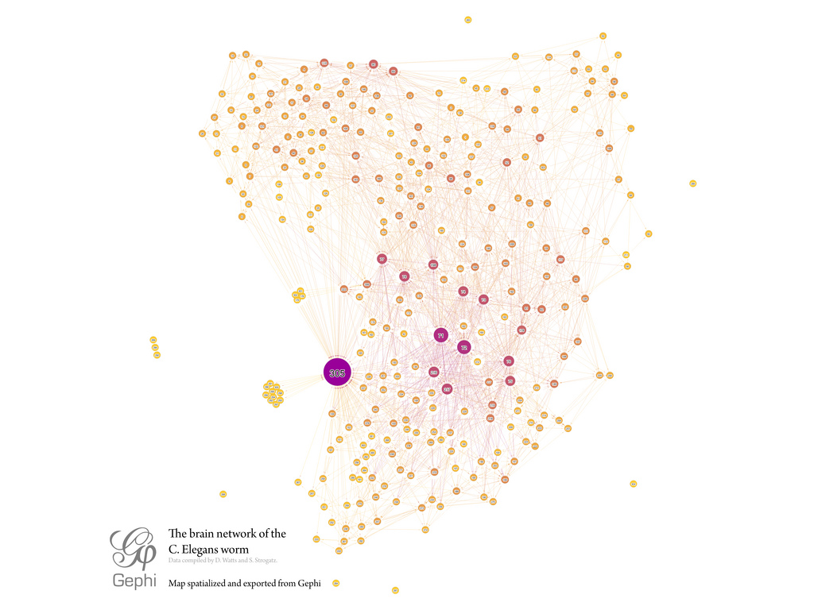
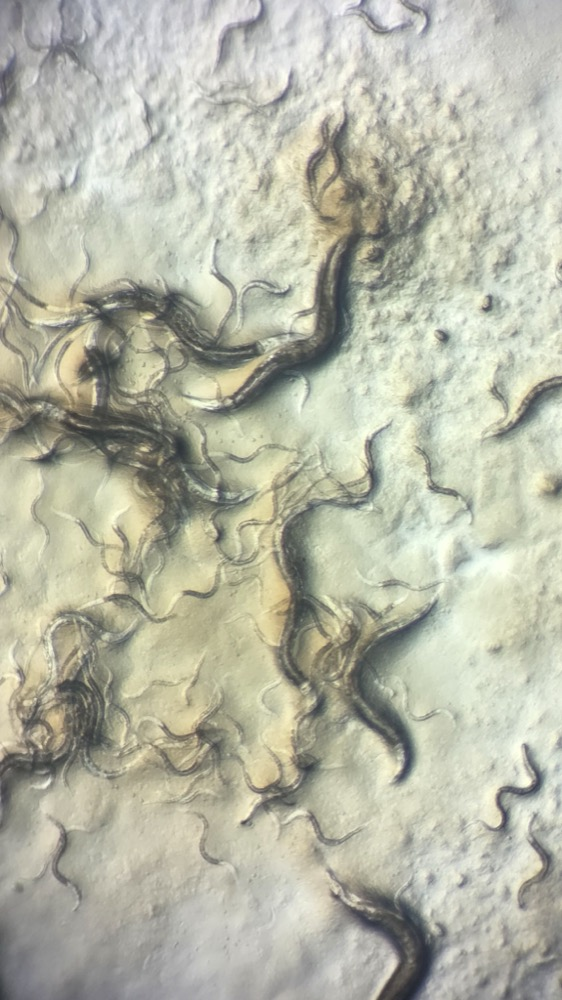

Executive Summary
Caenorhabditis elegans is a worm about a millimeter long that lives in soil. It has only 302 nerve cells, which made it the first animal whose every cell-to-cell connection was drawn without a single one left out. That map of connections is called a connectome. Wiring that evolution spent a very long time refining ought to work better as an AI circuit than wiring thrown together at random, and that expectation has been around in this field for years. A paper posted to arXiv on 24 September by Felix Reimers, Stefano Nichele and two colleagues at Østfold University College in Norway put the expectation itself on the bench. This article looks at what the test produced.
The researchers dropped 22 connectomes into a framework called reservoir computing with almost nothing altered. The circuit itself is never trained; only a small readout that interprets the signals coming out of it is. That leaves the character of the wiring fairly visible in the score. Three kinds of randomly rewired control of the same size were set up as opponents across five tasks. The real wiring won on one of them, memory, and on the rest the random controls led or nothing separated them. Even that single win disappeared depending on which method had measured the brain map and which metric had graded the score.
Sections 1 through 4 report what the paper says. Section 5 is this article's own reading of it.
Key Figures
Source: Reimers et al., arXiv:2609.30508, results section and Tables 1 and 2.
1 of 5
Tasks the real wiring came out ahead on
Memory capacity, and that one alone. Random wiring led on the two chaotic time series tasks, and the other two split by control
22
Nerve maps turned into circuits
Seven developmental points drawn from eight individuals, each drawn again by three separate measurement methods. Every map holds 180 neurons
+0.35 → −0.20
The sign the measurement method flipped
Same memory task. On maps drawn from synapse counts the original led; on maps drawn from physical contact the random controls did
7 → 0
Wins left once the metric changed
Graded by correlation coefficient the original led at all seven age points; graded by RMSE not one point was left
A Worm's Brain, Planted Straight Into a Circuit
An ordinary neural network settles the strength of its wiring by learning. Data flows through and hundreds of thousands of connections each get nudged a little at a time. Reservoir computing reverses that order. One tangled circuit is built, the connections inside it are frozen, and what gets trained is a small readout that takes in the signals the circuit produces in response to an input. The circuit's only job is to scatter the input across time. Because learning never reaches it, the structure of its wiring stays legible in the score.
A connectome suits this arrangement unusually well. The table recording which cell connects to which is already the adjacency matrix of a circuit. The researchers' preprocessing amounted to scaling the matrix so that its spectral radius came to 1, the minimum adjustment that keeps a circuit from either blowing up or dying away at once. Then they seated it in the slot normally filled by a recurrent network known as an echo state network.

The maps they used were released by Witvliet and colleagues in 2021. Eight genetically identical C. elegans were separated by developmental stage and swept with an electron microscope, covering four larval points just after hatching (L1.1 through L1.4), then L2, L3, and two adults. One map holds 180 brain neurons plus body-wall muscles, glia, and two canal-associated neurons. It is a reconstruction of the head-end brain rather than a map containing all 302 nerve cells, so the circuit reaches only that far as well.
This material is distinctive in that each individual was measured three separate ways. One method counts how many synapses join a pair of cells. One measures how large the junctions of those synapses are. One works out how much area the two cells actually touch across. The first two yield maps in which signals have a direction; the last yields a map without one. Applying all three at every developmental point produced 22 maps in total. One adult has no data from the synapse size or physical contact methods, which leaves seven rather than eight for each of those.

Where signals enter and leave the circuit followed biology too. Inputs were picked from among the sensory neurons, outputs from among the body-wall muscles, which transposes the path by which a worm senses the outside and moves its body. Checking whether that choice helps requires other choices to compare it against, so the researchers ran five configurations with the input and output positions varied. The first two kept the biological division between sensory cells and muscle; the remaining three dropped that division and took 30, 50, and 80 percent of each group as inputs and outputs.
There are five tasks. Memory capacity asks the circuit to reproduce a signal that arrived up to twenty time steps earlier. The Hénon map and Mackey-Glass tasks ask it to predict the next value of a chaotic time series, and perceptual decision making asks it to pick whichever of two time series has the larger mean. Go/No-go needs only an answer about whether a signal arrived. For each task, 15 sets of randomly drawn problems were stored in advance, 70 percent of them used to train the readout and the remaining 30 percent used to grade it.
Input and Output Placement Moves the Score More Than Rewiring
The random circuits that served as opponents came in three kinds. The first keeps the distribution of outgoing connection counts and rewires only where those connections land, with input and output nodes drawn from the same groups as the original. The second leaves the wiring alone and picks input and output nodes at random from the whole network. The third randomizes both. Each control was redrawn 15 times for every comparison, so that no single lucky circuit could carry the result.
Scores were pooled through beta regression, which summarizes the gap between the original and a control as a single coefficient. A positive value means the real wiring came out ahead, a negative one that the random control did. Below are the five tasks crossed with the three controls.
Read the table across and only the memory capacity line is orange. The real wiring beat all three controls on that task, and the gap widened as the controls grew more scrambled. The other four lines carry no orange at all. On both chaotic time series tasks the random side led whichever control was set up, and the gap on the Hénon map was especially wide. Perceptual decision making went to neither side.
The Go/No-go line only makes sense read downward. Scrambling the wiring alone left the difference unclear (+0.282, p=.065), while picking the input and output nodes at random as well put the random side plainly ahead (−0.386, p=.010). On the Mackey-Glass line too, the second cell is the only one whose sign and significance differ. The judgment the paper reaches at this point runs as follows. Randomizing the input and output nodes appears to bear on performance more heavily than rewiring the connections themselves.
More than the advantage of the wiring collapsed here. The input and output arrangement a worm actually uses, taking in signals at sensory neurons and sending them out to muscle, was pushed aside along with it. Where the circuit was gripped and read mattered more to the score than how its interior had been woven. The paper does leave a clue pointing the other way, though. Where the number of input and output nodes available is tight, it suggests, using the positions biology assigned may be the better bet.
The sentence the paper puts in its conclusion stands a step back from any win or loss. Whether biological wiring and biological input and output are an advantage or a disadvantage depends on the type of connectome, the reservoir configuration, the task used, and the measure by which performance was scored. Those four trailing conditions are the heaviest part of this paper.
Of those four, the task is worth a word in advance. The five tasks did not come from the worm. Most of them were taken from neurogym, a package of computational neuroscience tasks, and one was already in conn2res, a tool for running connectomes as reservoirs. Predicting the next value of a chaotic time series is not something a worm in soil does for a living. So what the experiment answered is less whether the worm's wiring makes a good circuit than whether it scores well on these five exam papers.
Three Ways to Measure One Nervous System, Three Answers
The three measurement methods from section 1 take the same nervous system in the same worm as their subject. The graphs that come out differ from one another all the same. On the two maps drawn from synapses, connections multiply as the worm grows. Connections carrying signals forward increase, and so does the degree to which the circuit divides into modules. The map drawn from the area where cells touch, by contrast, stays nearly as it was throughout development. Restricted to the interneuron circuit, the synapse maps change little either.
Directionality differs too. The synapse maps record which way a signal flows; the contact area map runs both ways. Moved into a circuit, one becomes an asymmetric matrix and the other a symmetric one. Average the three together on the grounds that they came from the same individuals, and results pointing in opposite directions cancel out until it looks as though nothing happened. That is why the researchers analyzed the three methods separately.
Split apart, the sign really did reverse. Below is the memory capacity task, the one place the original won, divided again by measurement method and grading metric. At each of the seven age points the original and the controls were set against one another and the wins counted.
The left half alone yields more than one conclusion. On the map drawn from synapse counts the original led at all seven points, with a mean contrast of +0.35. On the map drawn from synapse size five of the points went the original's way. Yet on the map drawn from physical contact all seven points went the other direction, and the mean contrast was −0.20. Same task, same worm, same reservoir configuration. The one thing that differs is what the nervous system was measured with.
In the right half the advantage that was left disappears. Rescoring the same results with RMSE, a prediction error, in place of the correlation coefficient, the finding that the synapse maps beat the controls vanished outright. Not one of the seven points went to the original. The paper attaches a note that the contrasts on this task were small to begin with, which is another way of saying the advantage was thin enough to turn over.
What the paper confirms here is not a performance ranking but an assumption. The assumption that results could reverse sign between the physical contact connectome and the two synapse connectomes turned out to hold. Neither the worm nor the circuit changed the conclusion. The method used to record that worm did.
Wobble of the same kind showed up in the reservoir configuration as well. The term crossing network type with reservoir configuration, and the term crossing network type with connectome type, were strongly significant on every task. On the memory capacity task the interaction with connectome type came to χ²=534.37 and the interaction with configuration to χ²=332.48. That is a signal that this material should not be summarized in a single average.
Other work on the same worm's connectome arrived this year with a different answer. Churchland and five co-authors, in a paper dated 7 September, measured wobble in place of score. Sweeping the spectral radius, input scaling, leak rate, and neuron bias, they tracked how much the metrics shook using the coefficient of variation. Across their experiments the C. elegans connectome sat consistently in a relatively low-variance regime. The structures with higher task-agnostic performance, on the other hand, proved more sensitive to hyperparameters and generalized worse. Depending on whether the score rewards the best result or the steadiest one, the same wiring is judged differently.
A June paper from Guragain and colleagues points the opposite way altogether. Placing six species' connectomes as reservoirs and tuning the connection strengths with four gradient-free bio-inspired optimization methods, they improved on the biological defaults for every species and every task, while filling the same connection structure with random strengths came in consistently behind the biological values. Their conclusion is that biological weights are an inductive bias that structure alone cannot recover. The two papers look as though they collide, and yet what each of them randomized sits in a different place. The paper this article follows rewired where connections land and which nodes carry input and output; the other held the structure fixed and changed only the strength values. Once what is fixed and what is disturbed differ, the same name of random control covers a different experiment.
No Direction Across Seven Stages of Growth
This material offered one more rare opportunity. With the nervous system of a single species cut into seven points from just after hatching to adulthood, whether computational ability improves as a nervous system grows can be checked directly. The guess that a mature circuit is a better circuit looks even more natural than copying the wiring does.
The results did not support the guess. Performance neither rose nor fell as age increased. Broken out by task and broken out by reservoir configuration, no curve traced a similar shape with age. The paper records that no noticeable trend appears.
Nor is that an artifact of an unchanging structure. The Witvliet team that built these maps reported that as the worm grows its brain tilts progressively toward feedforward organization and its division into modules becomes discernible. The wiring matured with a direction, while the scores from circuits built out of that wiring had none. The link from mature structure to better computation breaks here.
This differs from saying age had no effect at all. The term crossing network type with age was strongly significant statistically: χ²=126.87 on memory capacity, 44.52 on the Hénon map, 35.39 on Mackey-Glass. The gap between the original and the controls clearly does shift with age, and the shifting has no direction. It varies from point to point while giving no sign of where it is headed.
Some passages simply record what the paper does not know. Why the synapse-based circuits should beat the controls on the memory task of all tasks went unanswered in this paper and was handed to later work. The effect of deleting nodes or connections from the circuit was likewise left as an open question.
Why Pebblous Is Watching This Paper
From here on this article rereads the paper through the lens of data quality.
What catches the eye is not the finding that random wiring won. It is that a connectome, as a body of material, has exactly the character of what practitioners routinely call raw data. The word sounds like nature transcribed as it stands, when in fact it is the product of fixing an individual, slicing it thin, photographing it with an electron microscope, and then moving it into a table according to rules a person set about how much counts as one connection. Three measurement methods means three sets of those rules, and each set produced a different graph.
This paper shows how far that difference spreads. Changing the measurement rules overturned the win and loss of a performance comparison. Changing the grading metric removed the advantage that remained. There was one worm, and the circuits were the same. How much of what we had been calling a property of nature was in truth a property of the instruments and rules that recorded that nature, this experiment separated out in numbers.
The problem slips by even more quietly where models are compared. Setting two models' scores side by side, we take it as given that the data is the same. That premise holds not when the files match but when the procedures that produced the files match. A label of the same name means one thing before a guideline was revised and another after, one thing before the annotators changed and another after, one thing where ambiguous cases were discarded and another where they were kept. The difference settles invisibly inside the file and shows itself only on the leaderboard.
Cases Pebblous has taken up before point to the same spot. There was research in which nothing changed but the format the model was asked to write its answer in, and the data quality scores wobbled; there was a case where a test built to measure bias was in fact measuring reasoning ability. We also covered what happened when the exam paper of an anomaly detection benchmark carried the same row on both the right and the wrong side of the answer key. They overlap on one thing. Data that does not record what was measured can support any conclusion at all.
So the question that remains runs like this. Is what we call a structure modeled on nature a property of nature, or a property of the instruments and rules that measured that nature? If the former, copying more finely is the answer; if the latter, however finely the copy is made it amounts to copying the instrument. Telling the two apart calls for a record of the procedures by which the data was made, not a new model. This paper held three such records, which is how the reversal of sign became visible.
Thank you for reading this far. The paper this article follows is available in full at arXiv:2609.30508, and the connectome material it used was released by Witvliet et al. (2021). If your team is comparing two models, we would be glad if you checked whether the data behind the two experiments was made by the same procedure, and told us what you found.
References
- 1.Reimers, F. S., Ramstad, O. H., Hubin, A., & Nichele, S. (2026). "Benchmarking the Connectomes of Caenorhabditis elegans within the Reservoir Computing Framework." arXiv:2609.30508.
- 2.Churchland, M. W., de Palma Aristides, R., Garcia-Ojalvo, J., Ritz, A., Anderson, G., & Soriano, M. C. (2026). "Determinants of hyperparameter robustness in connectome reservoir computing." arXiv:2609.07355.
- 3.Guragain, A., Kakalis, S., & Godino-Llorente, J. I. (2026). "The Whale That Outswam Evolution: Swarm Intelligence Maximises Memory in Connectome Reservoirs." arXiv:2606.09902.
- 4.Witvliet, D., Mulcahy, B., Mitchell, J. K. et al. (2021). "Connectomes across development reveal principles of brain maturation." Nature, 596, 257–261.